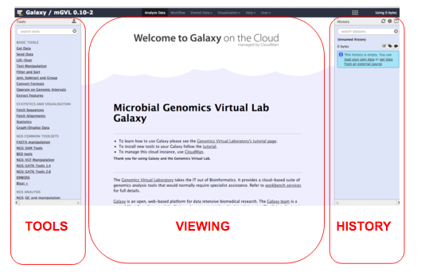
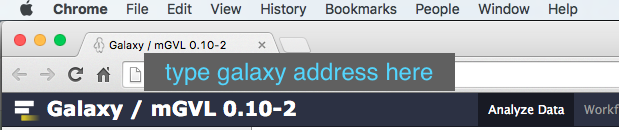
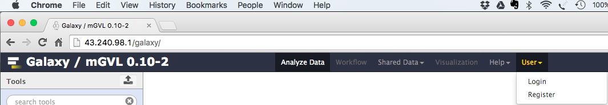

Get Data into Galaxy
Galaxy Background
Galaxy is a web-based analysis and workflow platform designed for biologists to analyse their own data. It can be used to run a variety of bioinformatics tools. The selection of bioinformatics tools installed on the Galaxy instance we are using today caters for the analysis of bacterial genomics data sets.
Galaxy is an open, web-based platform. Details about the project can be found here.
The Galaxy interface is separated into three parts. The

Register in Galaxy
Open a new tab or window on your web browser. Use Firefox or Chrome - please don’t use Internet Explorer or Safari.
In the address bar, type in the address of your galaxy server. (http://galaxy-mel.genome.edu.au)

Click on

- Select:
User → Register - Enter your email, choose a password, and choose a user name.
- Click
Submit
Import a history
- In the menu options across the top, go to
Shared Data . - Click on
Histories .

- A list of published histories should appear. Click on the history that you want to use.
- Click on
Import history . -
An option will appear to re-name the history. We don’t need to rename it, so click
Import . -
The history will now appear in your Current History pane, and the files are ready to use in Galaxy analyses.
Other ways to import data into Galaxy
- Upload a file from your computer
- Copy a link to a Galaxy history
- For sample training data files to use, see the next section.